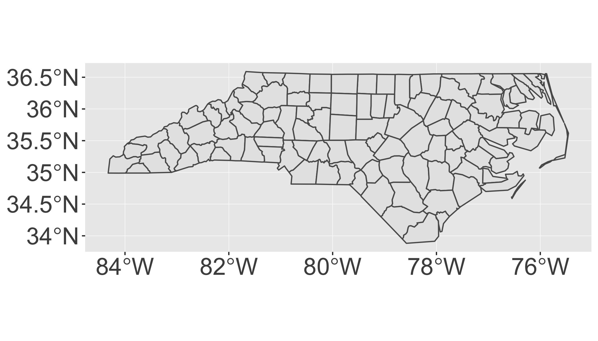
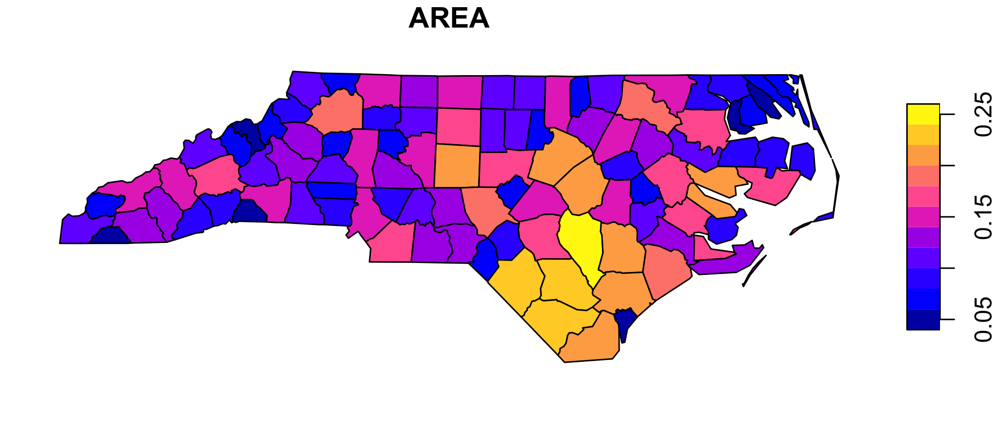
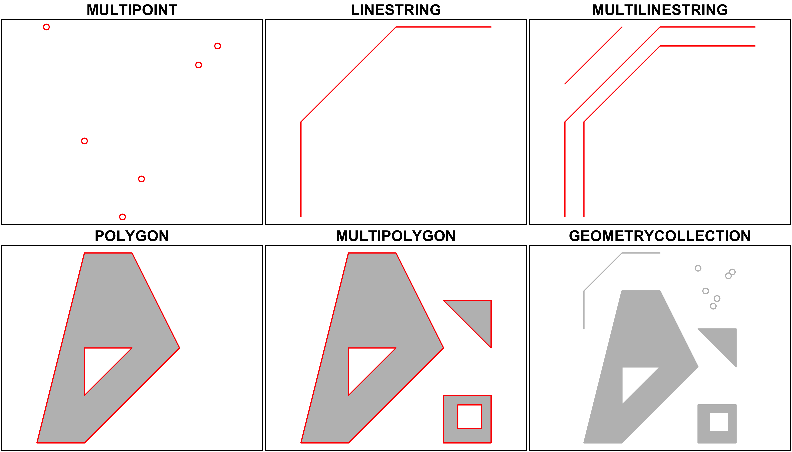
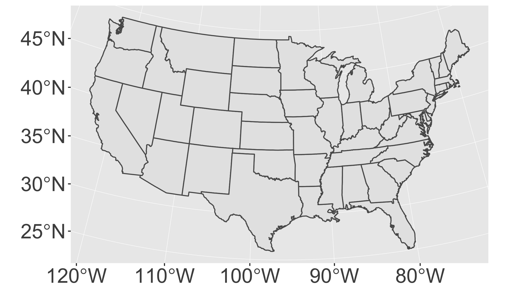
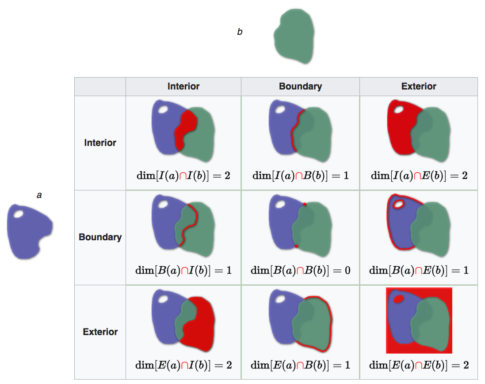
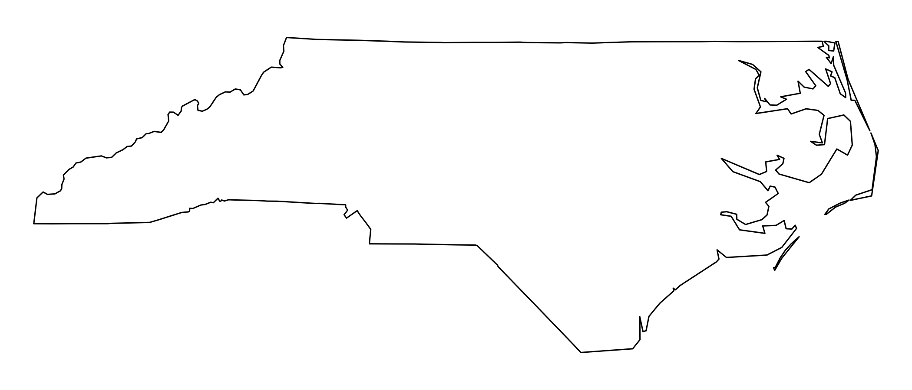
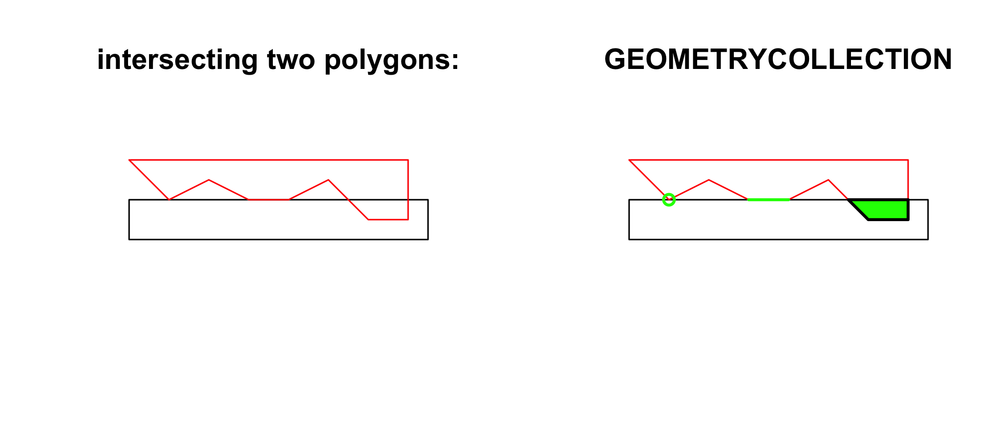
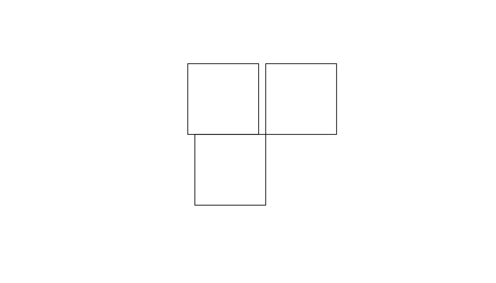
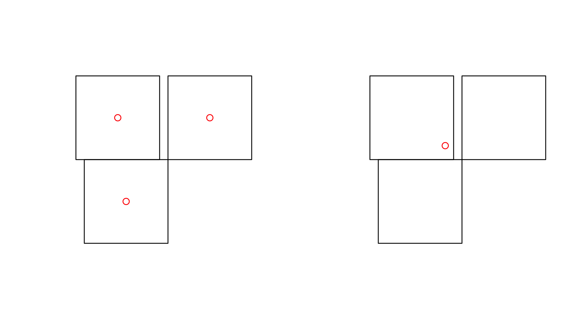
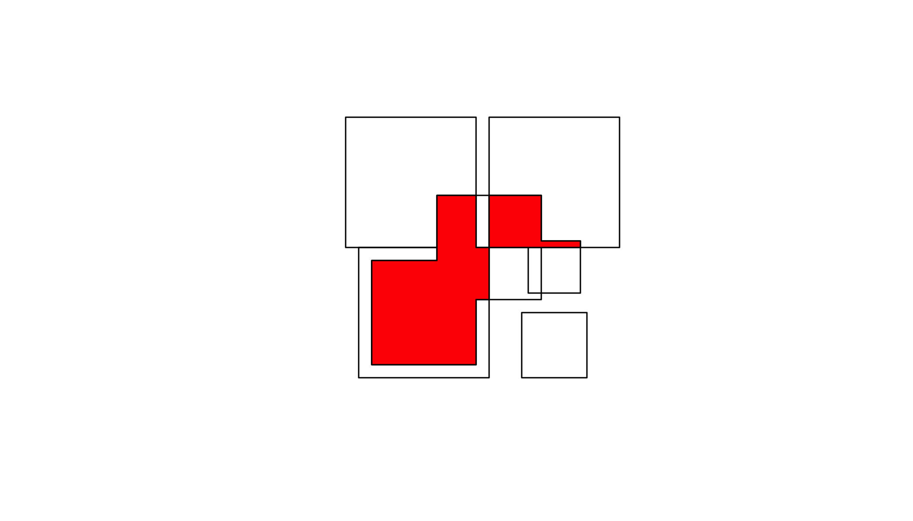

Working with Spatial Data
Download
| Rmd Script |
Commented R Script |
R Script |
|---|
Spatial packages
In R, there are two main lineages of tools for dealing with spatial data: sp and sf.
sphas been around for a while (the first release was in 2005), and it has a rich ecosystem of tools built on top of it. However, it uses a rather complex data structure, which can make it challenging to use.sfis newer (first released in October 2016!) so it doesn’t have such a rich ecosystem. However, it’s much easier to use and fits in very naturally with the tidyverse, and the ecosystem around it will grow rapidly.
In this class, we’re going to use sf, so start by installing it(if you haven’t already):
install.packages("sf")library(tidyverse)
library(sf)
library(maps)Simple features or simple feature access refers to a formal standard (ISO 19125-1:2004) that describes how objects in the real world can be represented in computers, with emphasis on the spatial geometry of these objects. It also describes how such objects can be stored in and retrieved from databases, and which geometrical operations should be defined for them.
The standard is widely implemented in spatial databases (such as PostGIS), commercial GIS (e.g., ESRI ArcGIS) and forms the vector data basis for libraries such as GDAL. A subset of simple features forms the GeoJSON standard.
If you work with PostGis or GeoJSON you may have come across the WKT (well-known text) format, for example like these:
POINT (30 10)
LINESTRING (30 10, 10 30, 40 40)
POLYGON ((30 10, 40 40, 20 40, 10 20, 30 10))sf implements this standard natively in R. Data are structured and conceptualized very differently from the sp approach.
In sf spatial objects are stored as a simple data frame with a special column that contains the information for the geographic coordinates. That special column is a list with the same length as the number of rows in the data frame. Each of the individual list elements then can be of any length needed to hold the coordinates that correspond to an individual feature.
Data I/O
Loading data
To read spatial data in R, use read_sf(). The following example reads an example dataset built into the sf package:
# The counties of North Carolina
file=system.file("shape/nc.shp", package = "sf")
file## [1] "/Library/Frameworks/R.framework/Versions/3.5/Resources/library/sf/shape/nc.shp"nc <- read_sf(file,
quiet = T,
stringsAsFactors = FALSE
)I recommend always setting quiet = TRUE and stringsAsFactors = FALSE.
Here we’re loading from a shapefile which is the way spatial data is most commonly stored. Despite the name a shapefile isn’t just one file, but is a collection of files that have the same name, but different extensions. Typically you’ll have four files:
.shpcontains the geometry, and.shxcontains an index into that geometry..dbfcontains metadata about each geometry (the other columns in the data frame)..prfcontains the coordinate system and projection information. You’ll learn more about that shortly.
read_sf() can read in the majority of spatial file formats, so don’t worry if your data isn’t in a shapefile; the chances are read_sf() will still be able to read it.
Converting data
If you get a spatial object created by another package, us st_as_sf() to convert it to sf. For example, you can take data from the maps package (included in base R) and convert it to sf:
nz_map <- maps::map("nz", plot = FALSE) #load a 'map' in non-sf format
nz_sf <- st_as_sf(nz_map) # convert it to sf formatData structure
nc is a data frame, and not a tibble, so when printing, it’s a good idea to use head() so you only see the first few rows:
head(nc)## Simple feature collection with 6 features and 14 fields
## geometry type: MULTIPOLYGON
## dimension: XY
## bbox: xmin: -81.74107 ymin: 36.07282 xmax: -75.77316 ymax: 36.58965
## epsg (SRID): 4267
## proj4string: +proj=longlat +datum=NAD27 +no_defs
## # A tibble: 6 x 15
## AREA PERIMETER CNTY_ CNTY_ID NAME FIPS FIPSNO CRESS_ID BIR74 SID74
## <dbl> <dbl> <dbl> <dbl> <chr> <chr> <dbl> <int> <dbl> <dbl>
## 1 0.114 1.44 1825 1825 Ashe 37009 37009 5 1091 1
## 2 0.061 1.23 1827 1827 Alle… 37005 37005 3 487 0
## 3 0.143 1.63 1828 1828 Surry 37171 37171 86 3188 5
## 4 0.07 2.97 1831 1831 Curr… 37053 37053 27 508 1
## 5 0.153 2.21 1832 1832 Nort… 37131 37131 66 1421 9
## 6 0.097 1.67 1833 1833 Hert… 37091 37091 46 1452 7
## # ... with 5 more variables: NWBIR74 <dbl>, BIR79 <dbl>, SID79 <dbl>,
## # NWBIR79 <dbl>, geometry <MULTIPOLYGON [°]>head(nz_sf)## Simple feature collection with 6 features and 1 field
## geometry type: POLYGON
## dimension: XY
## bbox: xmin: 166.458 ymin: -46.91705 xmax: 175.552 ymax: -36.09273
## epsg (SRID): 4326
## proj4string: +proj=longlat +datum=WGS84 +no_defs
## geometry ID
## 1 POLYGON ((166.458 -45.93695... Anchor.Island
## 2 POLYGON ((174.2599 -41.2092... Arapawa.Island
## 3 POLYGON ((166.58 -46.31315,... Coal.Island
## 4 POLYGON ((167.5798 -46.8738... Codfish.Island
## 5 POLYGON ((173.9064 -40.8492... D'Urville.Island
## 6 POLYGON ((175.5359 -36.3915... Great.Barrier.IslandThis is an ordinary data frame, with one exception: the geometry column. This column contains simple features, a standard way of representing two dimesional geometries like points, lines, polygons, multilines, and multipolygons. Multilines and multipolygons are nededed to represent geographic phenomena like a river with multiple branches, or a state made up of multiple islands.
nc$geometry## Geometry set for 100 features
## geometry type: MULTIPOLYGON
## dimension: XY
## bbox: xmin: -84.32385 ymin: 33.88199 xmax: -75.45698 ymax: 36.58965
## epsg (SRID): 4267
## proj4string: +proj=longlat +datum=NAD27 +no_defs
## First 5 geometries:## MULTIPOLYGON (((-81.47276 36.23436, -81.54084 3...## MULTIPOLYGON (((-81.23989 36.36536, -81.24069 3...## MULTIPOLYGON (((-80.45634 36.24256, -80.47639 3...## MULTIPOLYGON (((-76.00897 36.3196, -76.01735 36...## MULTIPOLYGON (((-77.21767 36.24098, -77.23461 3...Use plot() to show the geometry. You’ll learn how to use ggplot2 for more complex data visualisations later.
plot(nc$geometry)
Manipulating with dplyr
Since an sf object is just a data frame, you can manipulate it with dplyr. The following example gives you a taste:
nz_sf %>%
mutate(area = as.numeric(st_area(geometry))) %>%
filter(area > 1e10)## Simple feature collection with 2 features and 2 fields
## geometry type: POLYGON
## dimension: XY
## bbox: xmin: 166.3961 ymin: -46.74155 xmax: 178.5629 ymax: -34.39895
## epsg (SRID): 4326
## proj4string: +proj=longlat +datum=WGS84 +no_defs
## ID area geometry
## 1 North.Island 113469632351 POLYGON ((172.7433 -34.4421...
## 2 South.Island 150444467051 POLYGON ((172.6391 -40.5135...st_area() returns an object with units (i.e. m2), which is precise, but a little annoying to work with. I used as.numeric() to convert to a regular numeric vector.
Geometry
The geometry column is a list-column. In brief, they’re the richest and most complex type of column because a list can contain any other data structure, including other lists.
It’s worthwhile to pull out one piece so you can see what’s going on under the hood:
str(nc$geometry[[1]])## List of 1
## $ :List of 1
## ..$ : num [1:27, 1:2] -81.5 -81.5 -81.6 -81.6 -81.7 ...
## - attr(*, "class")= chr [1:3] "XY" "MULTIPOLYGON" "sfg"plot(nc$geometry[[1]])
Note the use of [[ to extract a single element, here, the first polygon.
This is a list of lists of matrices:
- The top-level list has one element for each “landmass” in the county. However, we can find a more interesting case:
n <- nc$geometry %>% map_int(length)
table(n)## n
## 1 2 3
## 94 4 2 interesting <- nc$geometry[n == 3][[1]]
plot(interesting)
str(interesting)## List of 3
## $ :List of 1
## ..$ : num [1:26, 1:2] -76 -76 -76 -76 -76.1 ...
## $ :List of 1
## ..$ : num [1:7, 1:2] -76 -76 -75.9 -75.9 -76 ...
## $ :List of 1
## ..$ : num [1:5, 1:2] -75.9 -75.9 -75.8 -75.8 -75.9 ...
## - attr(*, "class")= chr [1:3] "XY" "MULTIPOLYGON" "sfg"- This is a county made up of three non-contiguous pieces.
- The second-level list is not used in this dataset, but is needed when you have a landmass that contains a lake. (Or a landmass that contains a lake which has an island which has a pond).
- Each row of the matrix gives the location of a point on the boundary of the polygon.
Coordinate system
To correctly plot spatial data, you need to know exactly what the numeric positions mean, i.e. what are they in reference to? This is called the coordinate reference system or CRS. Often spatial data is described in terms of latitude and longitude. You can check this with st_is_longlat():
st_is_longlat(nc)## [1] TRUEYou might think that if you know the latitude and longitude of a point, you know exactly where it is on the Earth. However, things are not quite so simple, because latitude and longitude are based on the assumption that the Earth is a smooth ellipsoid, which is not true. Because different approximations work better in differently places, most countries have their own approximation: this is called the geodetic datum, or just datum for short.
Take two minutes and watch this simple explanation of the datum:
To get the datum and other coordinate system metadata, use st_crs():
st_crs(nc)## Coordinate Reference System:
## EPSG: 4267
## proj4string: "+proj=longlat +datum=NAD27 +no_defs"Here the datum is “NAD27”, the North American Datum of 1927 (NAD27)
In this class, you won’t have to worry too much about the datum as sf and ggplot2 will take care of the details for you. But it’s good to know why it exists and how to identify it if something goes wrong.
Spatial Visualization
Setup
Since sf is so new, support for it in ggplot2 is also very new. That means you’ll need to a recent version of ggplot2. Check that the install has succeeded by loading the tidyverse (you should have done this above) and then running ?geom_sf. If you can’t find the documentation for geom_sf, something has gone wrong. The first thing to try is restarting R so that you have a clean session. Installing ggplot2 is tricky if you already have it loaded!
Let’s load two datasets:
nc <- sf::st_read(system.file("shape/nc.shp", package = "sf"), quiet = TRUE)
states <- sf::st_as_sf(maps::map("state", plot = FALSE, fill = TRUE))geom_sf()
The easiest way to get started is to supply an sf object to geom_sf():
ggplot() +
geom_sf(data = nc)
You can also write this as:
ggplot(nc) +
geom_sf()Notice that ggplot2 takes care of setting the aspect ratio correctly.
You can supply other aesthetics: for polygons, fill is most useful:
ggplot() +
geom_sf(aes(fill = AREA), data = nc, colour = "white")
When you include multiple layers, ggplot2 will take care of ensuring that they all have a common CRS so that it makes sense to overlay them.
ggplot() +
geom_sf(data = states) +
geom_sf(data = nc)
You can combine geom_sf() with other geoms. In this case, x and y positions are assumed be in the same CRS as the sf object (typically these will be longitude and latitude).
ggplot() +
geom_sf(data = nc) +
annotate("point", x = -80, y = 35, colour = "red", size = 4)
coord_sf()
You’ll need to use coord_sf() for two reasons:
- You want to zoom into a specified region of the plot by using
xlimandylim
ggplot() +
geom_sf(data = nc) +
annotate("point", x = -80, y = 35, colour = "red", size = 4) +
coord_sf(xlim = c(-81, -79), ylim = c(34, 36))
- You want to override to use a specific projection. If you don’t specify the
crsargument, it just uses the one provided in the first layer. The following example uses “USA_Contiguous_Albers_Equal_Area_Conic”. The easiest way to supply the CRS is as a EPSG ID. I found this ID (102003) with a little googling.
ggplot() +
geom_sf(data = states) +
coord_sf(crs = st_crs(102003))
Reading and writing
As we’ve seen above, reading spatial data from an external file can be done by
filename <- system.file("shape/nc.shp", package="sf")
nc <- st_read(filename)## Reading layer `nc' from data source `/Library/Frameworks/R.framework/Versions/3.5/Resources/library/sf/shape/nc.shp' using driver `ESRI Shapefile'
## Simple feature collection with 100 features and 14 fields
## geometry type: MULTIPOLYGON
## dimension: XY
## bbox: xmin: -84.32385 ymin: 33.88199 xmax: -75.45698 ymax: 36.58965
## epsg (SRID): 4267
## proj4string: +proj=longlat +datum=NAD27 +no_defswe can suppress the output by adding argument quiet=TRUE or by using the otherwise nearly identical but more quiet
nc <- read_sf(filename)Writing takes place in the same fashion, using st_write:
st_write(nc, "nc.shp")If we repeat this, we get an error message that the file already exists, and we can overwrite by
st_write(nc, "nc.shp", delete_layer = TRUE)or its quiet alternative that does this by default,
write_sf(nc, "nc.shp") # silently overwritesGeometrical operations
The standard for simple feature access defines a number of geometrical operations.
st_is_valid and st_is_simple return a boolean indicating whether a geometry is valid or simple.
st_is_valid(nc[1:2,])## [1] TRUE TRUEst_distance returns a dense numeric matrix with distances between geometries. st_relate returns a character matrix with the DE9-IM values for each pair of geometries:
nc_nad83 = st_transform(nc, 32119) # reproject to NAD83 / North Carolina
st_distance(nc_nad83[c(1,4,22),], nc_nad83[c(1, 33,55,56),])## Units: m
## [,1] [,2] [,3] [,4]
## [1,] 0.00 312176.2 128338.51 475608.8
## [2,] 440548.35 114938.1 590417.79 0.0
## [3,] 18943.74 352708.6 78754.75 517511.6st_relate(nc_nad83[1:5,], nc_nad83[1:4,])## [,1] [,2] [,3] [,4]
## [1,] "2FFF1FFF2" "FF2F11212" "FF2FF1212" "FF2FF1212"
## [2,] "FF2F11212" "2FFF1FFF2" "FF2F11212" "FF2FF1212"
## [3,] "FF2FF1212" "FF2F11212" "2FFF1FFF2" "FF2FF1212"
## [4,] "FF2FF1212" "FF2FF1212" "FF2FF1212" "2FFF1FFF2"
## [5,] "FF2FF1212" "FF2FF1212" "FF2FF1212" "FF2FF1212"The commands st_intersects, st_disjoint, st_touches, st_crosses, st_within, st_contains, st_overlaps, st_equals, st_covers, st_covered_by, st_equals_exact and st_is_within_distance return a sparse matrix with matching (TRUE) indexes, or a full logical matrix:
st_intersects(nc_nad83[1:5,], nc_nad83[1:4,])## Sparse geometry binary predicate list of length 5, where the predicate was `intersects'
## 1: 1, 2
## 2: 1, 2, 3
## 3: 2, 3
## 4: 4
## 5: (empty)st_intersects(nc_nad83[1:5,], nc_nad83[1:4,], sparse = FALSE)## [,1] [,2] [,3] [,4]
## [1,] TRUE TRUE FALSE FALSE
## [2,] TRUE TRUE TRUE FALSE
## [3,] FALSE TRUE TRUE FALSE
## [4,] FALSE FALSE FALSE TRUE
## [5,] FALSE FALSE FALSE FALSEThe commands st_buffer, st_boundary, st_convexhull, st_union_cascaded, st_simplify, st_triangulate, st_polygonize, st_centroid, st_segmentize, and st_union return new geometries, e.g.:
sel <- c(1,5,14)
geom = st_geometry(nc_nad83)
buf <- st_buffer(geom, dist = 30000)
plot(buf, border = 'red')
plot(geom, add = TRUE)
plot(st_buffer(geom, -5000), add = TRUE, border = 'blue')
Commands st_intersection, st_union, st_difference, st_sym_difference return new geometries that are a function of pairs of geometries:
par(mar = rep(0,4))
u <- st_union(nc_nad83)
plot(u)
The following code shows how computing an intersection between two polygons may yield a GEOMETRYCOLLECTION with a point, line and polygon:
opar <- par(mfrow = c(1, 2))
a <- st_polygon(list(cbind(c(0,0,7.5,7.5,0),c(0,-1,-1,0,0))))
b <- st_polygon(list(cbind(c(0,1,2,3,4,5,6,7,7,0),c(1,0,.5,0,0,0.5,-0.5,-0.5,1,1))))
plot(a, ylim = c(-1,1))
title("intersecting two polygons:")
plot(b, add = TRUE, border = 'red')
(i <- st_intersection(a,b))## GEOMETRYCOLLECTION (POINT (1 0), LINESTRING (4 0, 3 0), POLYGON ((5.5 0, 7 0, 7 -0.5, 6 -0.5, 5.5 0)))plot(a, ylim = c(-1,1))
title("GEOMETRYCOLLECTION")
plot(b, add = TRUE, border = 'red')
plot(i, add = TRUE, col = 'green', lwd = 2)
par(opar)Non-valid geometries
Invalid geometries are for instance self-intersecting lines (left) or polygons with slivers (middle) or self-intersections (right).
x1 <- st_linestring(cbind(c(0,1,0,1),c(0,1,1,0)))
x2 <- st_polygon(list(cbind(c(0,1,1,1,0,0),c(0,0,1,0.6,1,0))))
x3 <- st_polygon(list(cbind(c(0,1,0,1,0),c(0,1,1,0,0))))
st_is_simple(st_sfc(x1))## [1] FALSEst_is_valid(st_sfc(x2,x3))## [1] FALSE FALSE
Units
Where possible geometric operations such as st_distance(), st_length() and st_area() report results with a units attribute appropriate for the CRS:
a <- st_area(nc[1,])
attributes(a)## $units
## $numerator
## [1] "m" "m"
##
## $denominator
## character(0)
##
## attr(,"class")
## [1] "symbolic_units"
##
## $class
## [1] "units"The units package can be used to convert between units:
units::set_units(a, km^2) # result in square kilometers## 1137.389 km^2units::set_units(a, ha) # result in hectares## 113738.9 haThe result can be stripped of their attributes if needs be:
as.numeric(a)## [1] 1137388604Geometrical operations
All geometrical operations st_op(x) or or st_op2(x,y) work both for sf objects as well as sfc objects x and y; since the operations work on the geometries, the non-geometries parts of an sf object are simply discarded. Also, all binary operations st_op2(x,y) called with a single argument, as st_op2(x), are handled as st_op2(x,x).
We will illustrate the geometrical operations on a very simple dataset:
b0 = st_polygon(list(rbind(c(-1,-1), c(1,-1), c(1,1), c(-1,1), c(-1,-1))))
b1 = b0 + 2
b2 = b0 + c(-0.2, 2)
x = st_sfc(b0, b1, b2)
a0 = b0 * 0.8
a1 = a0 * 0.5 + c(2, 0.7)
a2 = a0 + 1
a3 = b0 * 0.5 + c(2, -0.5)
y = st_sfc(a0,a1,a2,a3)
plot(x, border = 'red')
plot(y, border = 'green', add = TRUE)
Unary operations
st_is_valid returns whether polygon geometries are topologically valid:
b0 = st_polygon(list(rbind(c(-1,-1), c(1,-1), c(1,1), c(-1,1), c(-1,-1))))
b1 = st_polygon(list(rbind(c(-1,-1), c(1,-1), c(1,1), c(0,-1), c(-1,-1))))
st_is_valid(st_sfc(b0,b1))## [1] TRUE FALSEand st_is_simple whether line geometries are simple:
s = st_sfc(st_linestring(rbind(c(0,0), c(1,1))),
st_linestring(rbind(c(0,0), c(1,1),c(0,1),c(1,0))))
st_is_simple(s)## [1] TRUE FALSEst_area returns the area of polygon geometries, st_length the length of line geometries:
st_area(x)## [1] 4 4 4st_area(st_sfc(st_point(c(0,0))))## [1] 0st_length(st_sfc(st_linestring(rbind(c(0,0),c(1,1),c(1,2))), st_linestring(rbind(c(0,0),c(1,0)))))## [1] 2.414214 1.000000st_length(st_sfc(st_multilinestring(list(rbind(c(0,0),c(1,1),c(1,2))),rbind(c(0,0),c(1,0))))) # ignores 2nd part!## [1] 2.414214Binary operations: distance and relate
st_distance computes the shortest distance matrix between geometries; this is a dense matrix:
st_distance(x,y)## [,1] [,2] [,3] [,4]
## [1,] 0.0000000 0.6 0 0.500000
## [2,] 0.2828427 0.0 0 1.000000
## [3,] 0.2000000 0.8 0 1.220656st_relate returns a dense character matrix with the DE9-IM relationships between each pair of geometries:
st_relate(x,y)## [,1] [,2] [,3] [,4]
## [1,] "212FF1FF2" "FF2FF1212" "212101212" "FF2FF1212"
## [2,] "FF2FF1212" "212101212" "212101212" "FF2FF1212"
## [3,] "FF2FF1212" "FF2FF1212" "212101212" "FF2FF1212"element [i,j] of this matrix has nine characters, refering to relationship between x[i] and y[j], encoded as IxIy, IxBy, IxEy, BxIy, BxBy, BxEy, ExIy, ExBy, ExEy where I refers to interior, B to boundary, and E to exterior, and e.g. BxIy the dimensionality of the intersection of the the boundary Bx of x[i] and the interior Iy of y[j], which is one of {0,1,2,F}, indicating zero-, one-, two-dimension intersection, and (F) no intersection, respectively.
 Reading from left-to-right and top-to-bottom, the DE-9IM(a,b) string code is ‘212101212’, the compact representation of IxIy = 2, IxBy = 1, IxEy = 2, BxIy = 1, BxBy = 0, BxEy = 1, ExIy = 2, ExBy = 1, ExEy = 2. Figure from here.
Binary logical operations:
Binary logical operations return either a sparse matrix
st_intersects(x,y)## Sparse geometry binary predicate list of length 3, where the predicate was `intersects'
## 1: 1, 3
## 2: 2, 3
## 3: 3or a dense matrix
st_intersects(x, x, sparse = FALSE)## [,1] [,2] [,3]
## [1,] TRUE TRUE TRUE
## [2,] TRUE TRUE FALSE
## [3,] TRUE FALSE TRUEst_intersects(x, y, sparse = FALSE)## [,1] [,2] [,3] [,4]
## [1,] TRUE FALSE TRUE FALSE
## [2,] FALSE TRUE TRUE FALSE
## [3,] FALSE FALSE TRUE FALSEwhere list element i of a sparse matrix contains the indices of the TRUE elements in row i of the the dense matrix. For large geometry sets, dense matrices take up a lot of memory and are mostly filled with FALSE values, hence the default is to return a sparse matrix.
st_intersects returns for every geometry pair whether they intersect (dense matrix), or which elements intersect (sparse).
Other binary predicates include (using sparse for readability):
st_disjoint(x, y, sparse = FALSE)## [,1] [,2] [,3] [,4]
## [1,] FALSE TRUE FALSE TRUE
## [2,] TRUE FALSE FALSE TRUE
## [3,] TRUE TRUE FALSE TRUEst_touches(x, y, sparse = FALSE)## [,1] [,2] [,3] [,4]
## [1,] FALSE FALSE FALSE FALSE
## [2,] FALSE FALSE FALSE FALSE
## [3,] FALSE FALSE FALSE FALSEst_crosses(s, s, sparse = FALSE)## [,1] [,2]
## [1,] FALSE FALSE
## [2,] FALSE FALSEst_within(x, y, sparse = FALSE)## [,1] [,2] [,3] [,4]
## [1,] FALSE FALSE FALSE FALSE
## [2,] FALSE FALSE FALSE FALSE
## [3,] FALSE FALSE FALSE FALSEst_contains(x, y, sparse = FALSE)## [,1] [,2] [,3] [,4]
## [1,] TRUE FALSE FALSE FALSE
## [2,] FALSE FALSE FALSE FALSE
## [3,] FALSE FALSE FALSE FALSEst_overlaps(x, y, sparse = FALSE)## [,1] [,2] [,3] [,4]
## [1,] FALSE FALSE TRUE FALSE
## [2,] FALSE TRUE TRUE FALSE
## [3,] FALSE FALSE TRUE FALSEst_equals(x, y, sparse = FALSE)## [,1] [,2] [,3] [,4]
## [1,] FALSE FALSE FALSE FALSE
## [2,] FALSE FALSE FALSE FALSE
## [3,] FALSE FALSE FALSE FALSEst_covers(x, y, sparse = FALSE)## [,1] [,2] [,3] [,4]
## [1,] TRUE FALSE FALSE FALSE
## [2,] FALSE FALSE FALSE FALSE
## [3,] FALSE FALSE FALSE FALSEst_covered_by(x, y, sparse = FALSE)## [,1] [,2] [,3] [,4]
## [1,] FALSE FALSE FALSE FALSE
## [2,] FALSE FALSE FALSE FALSE
## [3,] FALSE FALSE FALSE FALSEst_covered_by(y, y, sparse = FALSE)## [,1] [,2] [,3] [,4]
## [1,] TRUE FALSE FALSE FALSE
## [2,] FALSE TRUE FALSE FALSE
## [3,] FALSE FALSE TRUE FALSE
## [4,] FALSE FALSE FALSE TRUEst_equals_exact(x, y,0.001, sparse = FALSE)## [,1] [,2] [,3] [,4]
## [1,] FALSE FALSE FALSE FALSE
## [2,] FALSE FALSE FALSE FALSE
## [3,] FALSE FALSE FALSE FALSEOperations returning a geometry
u = st_union(x)
plot(u)
par(mfrow=c(1,2), mar = rep(0,4))
plot(st_buffer(u, 0.2))
plot(u, border = 'red', add = TRUE)
plot(st_buffer(u, 0.2), border = 'grey')
plot(u, border = 'red', add = TRUE)
plot(st_buffer(u, -0.2), add = TRUE)
plot(st_boundary(x))
par(mfrow = c(1:2))
plot(st_convex_hull(x))
plot(st_convex_hull(u))
par(mfrow = c(1,1))par(mfrow=c(1,2))
plot(x)
plot(st_centroid(x), add = TRUE, col = 'red')
plot(x)
plot(st_centroid(u), add = TRUE, col = 'red')
The intersection of two geometries is the geometry covered by both; it is obtained by st_intersection:
plot(x)
plot(y, add = TRUE)
plot(st_intersection(st_union(x),st_union(y)), add = TRUE, col = 'red')
To get everything but the intersection, use st_difference or st_sym_difference`:
par(mfrow=c(2,2), mar = c(0,0,1,0))
plot(x, col = '#ff333388');
plot(y, add=TRUE, col='#33ff3388')
title("x: red, y: green")
plot(x, border = 'grey')
plot(st_difference(st_union(x),st_union(y)), col = 'lightblue', add = TRUE)
title("difference(x,y)")
plot(x, border = 'grey')
plot(st_difference(st_union(y),st_union(x)), col = 'lightblue', add = TRUE)
title("difference(y,x)")
plot(x, border = 'grey')
plot(st_sym_difference(st_union(y),st_union(x)), col = 'lightblue', add = TRUE)
title("sym_difference(x,y)")
Function st_segmentize adds points to straight line sections of a lines or polygon object:
par(mfrow=c(1,3),mar=c(1,1,0,0))
pts = rbind(c(0,0),c(1,0),c(2,1),c(3,1))
ls = st_linestring(pts)
plot(ls)
points(pts)
ls.seg = st_segmentize(ls, 0.3)
plot(ls.seg)
pts = ls.seg
points(pts)
pol = st_polygon(list(rbind(c(0,0),c(1,0),c(1,1),c(0,1),c(0,0))))
pol.seg = st_segmentize(pol, 0.3)
plot(pol.seg, col = 'grey')
points(pol.seg[[1]])
Function st_polygonize polygonizes a multilinestring, as far as the points form a closed polygon:
par(mfrow=c(1,2),mar=c(0,0,1,0))
mls = st_multilinestring(list(matrix(c(0,0,0,1,1,1,0,0),,2,byrow=TRUE)))
x = st_polygonize(mls)
plot(mls, col = 'grey')
title("multilinestring")
plot(x, col = 'grey')
title("polygon")
Further reading: 1. Much of the material below was taken from the sf vignettes available here. 2. S. Scheider, B. Gräler, E. Pebesma, C. Stasch, 2016. Modelling spatio-temporal information generation. Int J of Geographic Information Science, 30 (10), 1980-2008. (pdf) 3. Stasch, C., S. Scheider, E. Pebesma, W. Kuhn, 2014. Meaningful Spatial Prediction and Aggregation. Environmental Modelling & Software, 51, (149–165, open access).